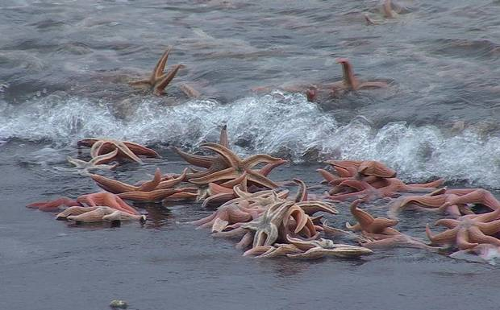

En la región del Biobío se registró una impresionante varazón de cientos de estrellas de mar, que fueron encontradas muertas en el sector del Pueblito de la comuna de Lota y en Playa de Maule de la comuna de Coronel.
Fueron algunos vecinos quienes se percataron de la presencia de cientos de estos ejemplares, que principalmente viven pegadas en roqueríos. Ellos afirman que es primera vez que ven este tipo de ejemplares varados, pero reconocen que anteriormente habían visto algunos moluscos, incluso hasta peces, muertes en el sector. Tras percatarse de la situación dieron aviso a las autoridades, por lo cual llegó hasta el lugar el Servicio Nacional de Pesca y Acuicultura (Sernapesca) junto a la Seremi de Salud, quienes tomaron algunas muestras para determinar cuál fue la causa de esta varazón.
El director zonal de pesca y agricultura, Oscar Henríquez, explicó;
"las varazones de este tipo de animales normalmente son de carácter natural, ya sea por cambio de temperatura en la capa de oxígeno, por cambios en las termoclinas, o por cambios por eddies, que son micro remolinos".
"También existe la posibilidad que tengan origen antrópico, pero hoy día Sernapesca ya tomó la muestras correspondientes para hacer los análisis y esperamos que durante la semana nos puedan responder la interrogante de por qué se produjo esta varazón", agregó